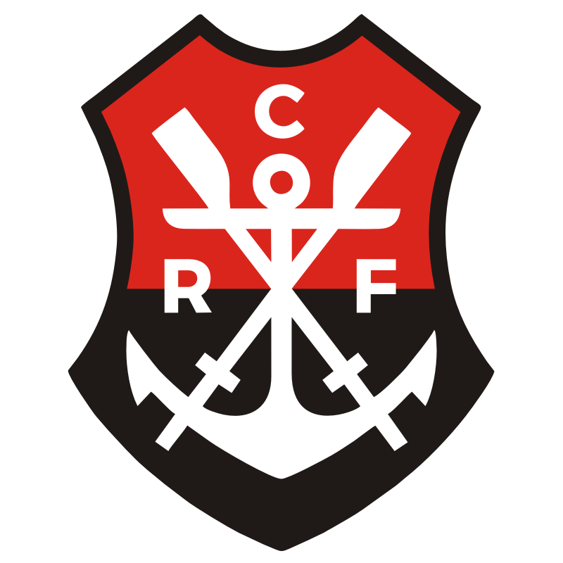

|  |
|
Gabriel Barbosa Almeida (São Bernardo do Campo, 30 de agosto de 1996), mais conhecido como Gabriel Barbosa, ou ainda pelo apelidos Gabigol, Gabi ou pelo
nome artístico Lil Gabi, é um futebolista brasileiro que atua como atacante. Atualmente joga no Flamengo.
Estreou como profissional pelo Santos, em 2013, contra o próprio Flamengo. Logo tornou-se titular e ganhou reconhecimento da torcida santista como o artilheiro do time na temporada e artilheiro da Copa do Brasil de 2014.
Sagrou-se artilheiro do Peixe com 8 gols na Copa do Brasil de 2015, em que o clube foi vice-campeão.
No ano seguinte, mais uma vez teve destaque e foi o principal artilheiro do clube e campeão do Campeonato Paulista de 2016.
Pouco tempo depois, foi contratado pela Internazionale por mais de 29,06 milhões de euros.
Após uma passagem sem destaque pelo time, foi emprestado para o Benfica, no qual teve outra passagem tímida, marcando apenas um gol em uma partida oficial pela Taça de Portugal.
Gabigol retornou ao Santos por empréstimo da Internazionale no início de 2018, deixando o Benfica após seis meses.
Em 2019 foi emprestado ao Flamengo, onde teve uma ótima temporada: foi campeão do Campeonato Carioca, levantou o título do Campeonato Brasileiro sagrando-se artilheiro, com 25 gols, e ainda se destacou na Copa Libertadores, onde marcou dois gols na final contra o River Plate, conquistando a competição e também foi artilheiro, com 9 gols.
O ano foi suficiente para se tornar um dos maiores ídolos da história do clube.
Participou de alguns torneios de divisões de base pela Seleção Brasileira, como a Copa do Mundo Sub-17 de 2013 e o Sul-Americano Sub-20 de 2015, vencendo o Torneio Internacional de COTIF de 2014.
Na Seleção principal, foi convocado para a disputa da Copa América Centenário em 2016, nos Estados Unidos.
Ainda no mesmo ano, fez parte da equipe que conquistou a inédita medalha de ouro nos Jogos Olímpicos do Rio de Janeiro.